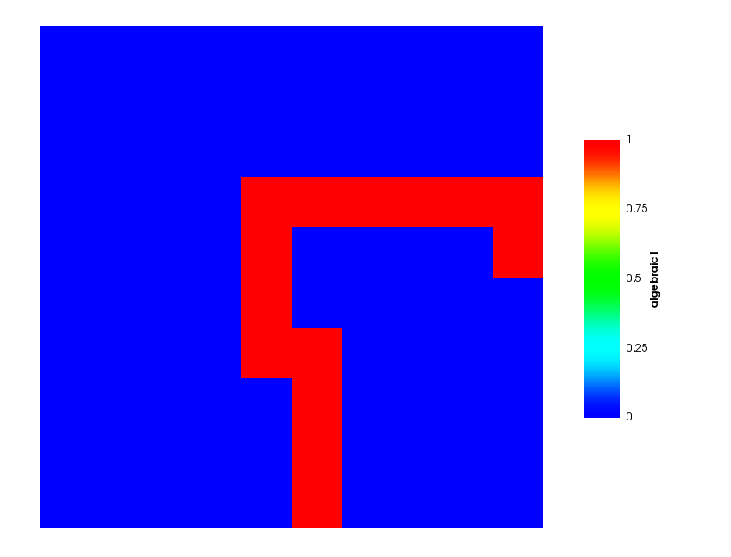
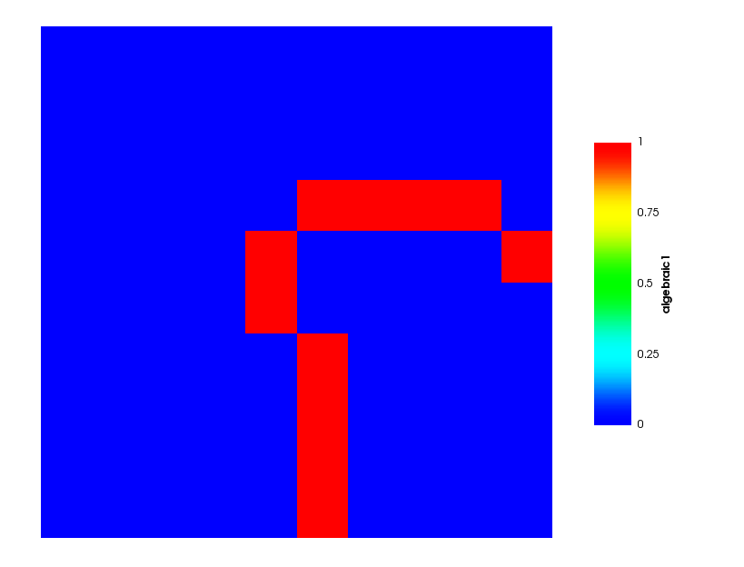

- ghost_uoThe GhostUserObject from which to obtain ghosting information from.
C++ Type:UserObjectName
Controllable:No
Description:The GhostUserObject from which to obtain ghosting information from.
- pidThe PID to see the ghosting for
C++ Type:unsigned int
Controllable:No
Description:The PID to see the ghosting for
- variableThe name of the variable that this object applies to
C++ Type:AuxVariableName
Unit:(no unit assumed)
Controllable:No
Description:The name of the variable that this object applies to
GhostingFromUOAux
Colors the elements ghosted to the chosen PID.
Description
GhostingFromUOAux allows you to visualize what the current algebraic and geometric ghosting functors (and RelationshipManagers) are going to do. This is useful in tracking down both under and over-ghosting.
At any one time it will only show you the ghosted elements for one processor ID.
Normally, this class shouldn't be used directly. Instead set it up through the DisplayGhostingAction.

Figure 1: The default geometric ghosting for PID 1

Figure 2: The default algebraic ghosting for PID 1
Input Parameters
- blockThe list of blocks (ids or names) that this object will be applied
C++ Type:std::vector<SubdomainName>
Controllable:No
Description:The list of blocks (ids or names) that this object will be applied
- boundaryThe list of boundaries (ids or names) from the mesh where this object applies
C++ Type:std::vector<BoundaryName>
Controllable:No
Description:The list of boundaries (ids or names) from the mesh where this object applies
- check_boundary_restrictedTrueWhether to check for multiple element sides on the boundary in the case of a boundary restricted, element aux variable. Setting this to false will allow contribution to a single element's elemental value(s) from multiple boundary sides on the same element (example: when the restricted boundary exists on two or more sides of an element, such as at a corner of a mesh
Default:True
C++ Type:bool
Controllable:No
Description:Whether to check for multiple element sides on the boundary in the case of a boundary restricted, element aux variable. Setting this to false will allow contribution to a single element's elemental value(s) from multiple boundary sides on the same element (example: when the restricted boundary exists on two or more sides of an element, such as at a corner of a mesh
- execute_onINITIAL TIMESTEP_ENDThe list of flag(s) indicating when this object should be executed. For a description of each flag, see https://mooseframework.inl.gov/source/interfaces/SetupInterface.html.
Default:INITIAL TIMESTEP_END
C++ Type:ExecFlagEnum
Controllable:No
Description:The list of flag(s) indicating when this object should be executed. For a description of each flag, see https://mooseframework.inl.gov/source/interfaces/SetupInterface.html.
- functor_typegeometricThe type of ghosting functor to use
Default:geometric
C++ Type:MooseEnum
Controllable:No
Description:The type of ghosting functor to use
- include_local_elementsFalseWhether or not to include local elements as part of the ghosting set
Default:False
C++ Type:bool
Controllable:No
Description:Whether or not to include local elements as part of the ghosting set
Optional Parameters
- control_tagsAdds user-defined labels for accessing object parameters via control logic.
C++ Type:std::vector<std::string>
Controllable:No
Description:Adds user-defined labels for accessing object parameters via control logic.
- enableTrueSet the enabled status of the MooseObject.
Default:True
C++ Type:bool
Controllable:Yes
Description:Set the enabled status of the MooseObject.
- seed0The seed for the master random number generator
Default:0
C++ Type:unsigned int
Controllable:No
Description:The seed for the master random number generator
- use_displaced_meshFalseWhether or not this object should use the displaced mesh for computation. Note that in the case this is true but no displacements are provided in the Mesh block the undisplaced mesh will still be used.
Default:False
C++ Type:bool
Controllable:No
Description:Whether or not this object should use the displaced mesh for computation. Note that in the case this is true but no displacements are provided in the Mesh block the undisplaced mesh will still be used.
Advanced Parameters
- prop_getter_suffixAn optional suffix parameter that can be appended to any attempt to retrieve/get material properties. The suffix will be prepended with a '_' character.
C++ Type:MaterialPropertyName
Unit:(no unit assumed)
Controllable:No
Description:An optional suffix parameter that can be appended to any attempt to retrieve/get material properties. The suffix will be prepended with a '_' character.
- use_interpolated_stateFalseFor the old and older state use projected material properties interpolated at the quadrature points. To set up projection use the ProjectedStatefulMaterialStorageAction.
Default:False
C++ Type:bool
Controllable:No
Description:For the old and older state use projected material properties interpolated at the quadrature points. To set up projection use the ProjectedStatefulMaterialStorageAction.